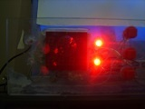
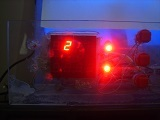
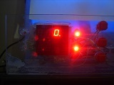
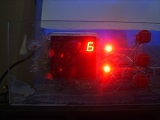
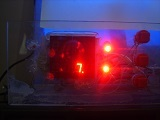
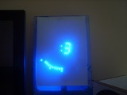

Vous n'êtes pas seuls dans l'Univers !

[
Afficheurs à LED : Circuits de pilotage - Page 1
]
Généralités.
Cet partie présente des montages qui permettent de piloter des afficheurs à LED, qu'il s'agisse d'afficheurs 7 segments ou de matrices.
Un essai, à l'aide d'un circuit intégré spécialisé, de référence MAX7219, avec deux afficheurs 7 segments, a permis de mettre en exergue les fonctionnalités suivantes :
- Affichage de symboles décodés par le circuit intégré,
- Affichage de symboles définis par l'utilisateur,
- Variations de l'intensité lumineuse de l'affichage.
 Démo Afficheur 7 Segments et MAX7219
Démo Afficheur 7 Segments et MAX7219
Le même type d'essais, mais avec une matrice de 8 x 8 LED, a ensuite permis de valoriser les fonctionnalités suivantes :
- Affichage de symboles définis par l'utilisateur,
- Affichage d'animations lumineuses,
- Variations de l'intensité lumineuse de l'affichage.
Démo Matrice de 8 x 8 LED et MAX7219
1) Afficheurs à LED
Les afficheurs à LED sont des composants destinés à représenter des indications lumineuses.
Ils sont constitués de plusieurs LED, disposées de manière à former des symboles.
1-1) Afficheurs 7 segments
Les plus connus sont les afficheurs 7 segments, utilisés pour représenter les chiffres de « 0 » à « 9 », des caractères spéciaux qui se prêtent à ce type de dispositif, et éventuellement un point décimal.
1-2) Afficheurs à matrices de LED
Il existe également des afficheurs qui sont constitués de points lumineux, qui ont ainsi l'aspect de matrices.
Généralement sous forme de groupements de 6 x 5, 7 x 5 ou 8 x 8 LED, ils permettent de représenter plus de caractères, de façon graphique.
Cela implique un nombre de LED par afficheur plus important, par rapport à des afficheurs 7 segments, d'où une augmentation de la complexité de pilotage.
Il existe des afficheurs à matrice de LED qui sont bicolores, ou multicolores.
1-3) Ecrans OLED
Les écrans de type « OLED » qui sont fabriqués reprennent ce principe, mais avec assez de LED pour pouvoir afficher du texte et des images.
2) Câblage interne
Le câblage interne de ces afficheurs est effectué de manière à limiter le nombre de connexions avec l'extérieur.
Pour un afficheur 7 segments, il y a 7 LED à relier, ou 8, s'il y a un point décimal en plus.
S'il s'agit d'un afficheur à cathode commune, cela signifie que, en interne, toutes les cathodes des LED sont reliées à une, ou plusieurs broches, et les anodes sont rendues accessibles sur autant de broches qu'il y a d'anodes.
3) Câblage dans un système d'affichage
Selon le choix de câblage des afficheurs, le nombre de connexions sera plus ou moins important.
3-1) Câblage direct
Le câblage direct consiste à connecter chaque LED à une broche de sortie du cicruit de commande des afficheurs, le plus souvent par l'intermédiaire d'une résistance de limitation de l'intensité du courant.
3-2) Multiplexage
Pour avoir un affichage sur plusieurs symboles, il convient d'éviter d'avoir à câbler autant de fils qu'il y aura de points lumineux.
Une technique courante qui réduit la quantité de câblage est le multiplexage.
Elle consiste, pour des afficheurs 7 segments à cathode commune, à relier toutes les anodes ensemble, et à n'allumer qu'un seul afficheur à la fois.
L'allumage d'un afficheur s'effectue en reliant les cathodes de ses LED, aussi appelé le « Point commun ».
Les afficheurs sont allumés à tour de rôle, de façon suffisament rapide pour que, grâce à la persistance rétinienne, l'impression soit donnée que tous les afficheurs sont allumés en même temps.
Cette technique a un impact sur l'intensité lumineuse de l'afficahge.
En effet, pour 8 afficheurs multiplexés, un afficheur sera allumé pendant un maximum d' 1 / 8 du temps.
Il faut donc prévoir d'alimenter les LED de chaque afficheur sous une intensité supérieure à celle qui serait utilisée s'ils étaient alimentés en permanence.
Il faut respecter un temps d'extinction des afficheurs, entre deux phases de multiplexage.
Ceci permet d'éviter d'avoir le symbole précédent qui se retrouve légèrement visible sur le symbole suivant.
Lorsqu'il se manifeste, ce phénomène est dû au fait que le pilotage des anodes des LED n'est pas suffisament synchrone avec le pilotage des cathodes des LED.
Le fonctionnement est identique pour les afficheurs 7 segments à anode commune, en échangeant les rôles des cathodes et des anodes.
Il en est de même pour les matrices de LED.
Deux exemples de multiplexages sont donnés par les réalisations suivantes, dont vous pouvez obtenir plus d'informations en ouvrant les liens qui y sont associés :
- Le thermomètre numérique, qui multiplexe 8 afficheurs 7 segments à cathode commune,
- La Grosse Horloge, qui multiplexe 4 afficheurs 7 segments à cathode commune, fabriqués avec des LED, ainsi que 4 groupes de 15 LED.
|  |  |  |  |
| Phase 1 | Phase 2 | Phase 3 | Phase 4 |

|

|
 |

|
| Phase 5 | Phase 6 | Phase 7 | Phase 8 |
{kind=link}
{kind=link}
{kind=link}
{kind=link}
{kind=link}
{kind=link}

|
 |

|
|
| Phase 1 | Phase 2 | Phase 3 | Phase 4 |
{kind=link}
{kind=link}
{kind=link}
L'affichage apparait moins lumineux que pour chaque phase, car les LED des éléments d'affichages sont sollicitées pendant 1 / 8 du temps pour le thermomètre numérique, et pendant 1 / 4 du temps pour la Grosse Horloge.

Le symbole « : » de la Grosse Horloge n'est pas multiplexé.
Celui-ci est allumé en permanence, mais les LED qui le composent ont une résistance de limitation qui est plus grande que celles des autres, pour éviter qu'il n'apparaisse plus lumineux.
3-3) Charlieplexage
Le charlieplexage, que l'on retrouve plus fréquemment sous le terme anglais « Charlieplexing » , du nom de Charlie ALLEN, qui l'a poroposé en 1995 à la société MAXIM INTEGRATED, est une méthode qui vise à réduire le nombre de broches de sorties requises pour le pilotage d'un groupement de LED, par rapport au multiplexage.
Cette méthode utilise le fait que les LED ne peuvent s'allumer que si le courant électrique qui les traverse est dans le sens direct.
Elle se base également sur les fonctions de sorties à non pas deux, mais à trois états des circuits nimériques.
Ces trois états sont les classiques états bas - Zéro logique - et états haut - Un logique - , auquel s'ajoute l'état à haute impédance, qui peut être assimilé à celui d'un interrupteur ouvert.
Commentaires (0)
Ajouter un commentaire